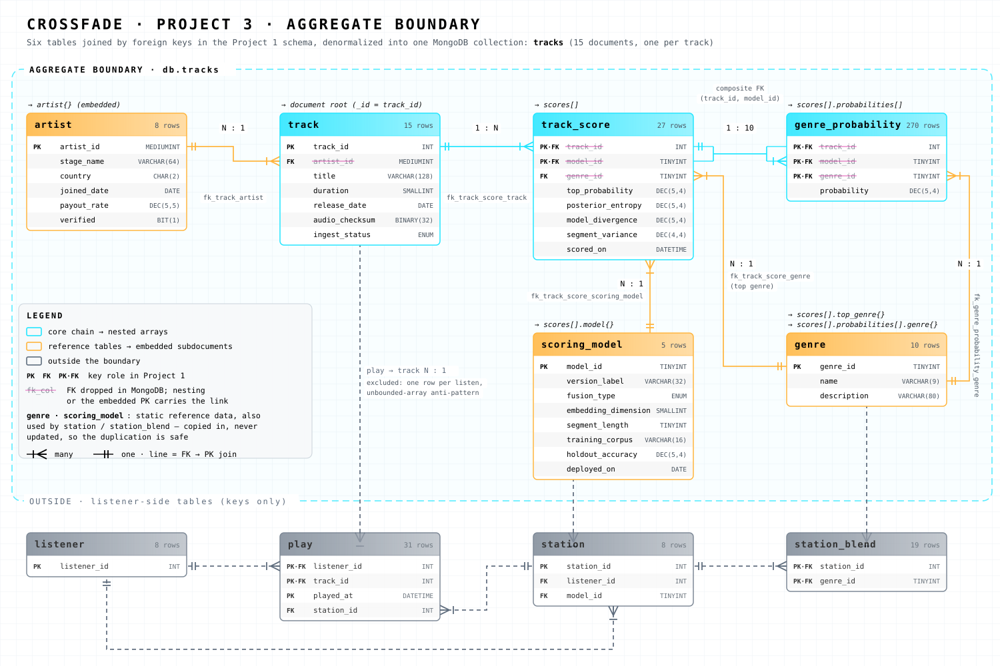

Project 3 · Task 1 · proposed Nov 10, 2026 · six tables agreed
One document per track. Six Project 1 tables, joined by foreign keys, are denormalized into a single tracks collection.

Built by python project3/scripts/build_aggregate_svg.py from the Project 1 schema; columns, types, keys and row counts match crossfade_schema.sql and data.xlsx.
The brief asks for at least 3 related tables. In this course that means tables joined by foreign keys in the
Project 1 schema: every table in the boundary must reach the others through FK → PK links, the lines in the physical
data model. Denormalizing turns those joins into nesting. All six tables below reach track through such a chain.
| Table | Joined by (crossfade_schema.sql) | Cardinality | Becomes |
|---|---|---|---|
| track | root | – | the document, _id = track_id |
| artist | track.artist_id → artist.artist_id (fk_track_artist) | N tracks : 1 artist | artist{} |
| track_score | track_score.track_id → track.track_id (fk_track_score_track) | 1 track : N scores | scores[] |
| scoring_model | track_score.model_id → scoring_model.model_id (fk_track_score_scoring_model) | N scores : 1 model | scores[].model{} |
| genre_probability | (track_id, model_id) → track_score (fk_genre_probability_track_score, composite) | 1 score : 10 probabilities | scores[].probabilities[] |
| genre | track_score.genre_id → genre (fk_track_score_genre) and genre_probability.genre_id → genre (fk_genre_probability_genre) | N : 1, joined twice | scores[].top_genre{} and scores[].probabilities[].genre{} |
core The chain track → track_score → genre_probability becomes nested arrays.
reference The other three are copied in as embedded subdocuments.
The brief keeps every primary key and drops every foreign key. Each dropped FK's link survives as nesting or as the embedded table's own PK.
| Project 1 column | Role | In MongoDB |
|---|---|---|
track.track_id | PK | _id |
track.artist_id | FK | dropped; artist.artist_id is the artist's own PK |
track_score.track_id | PK·FK | dropped; implied by the parent document |
track_score.model_id | PK·FK | dropped; scores[].model.model_id |
track_score.genre_id | FK | dropped; scores[].top_genre.genre_id |
genre_probability.(track_id, model_id) | PK·FK | dropped; implied by the enclosing score |
genre_probability.genre_id | PK·FK | dropped; probabilities[].genre.genre_id |
Open: keep _id = track_id alone, as the lecture allows for custom identifiers, or also keep a literal track_id field.
genre (10 rows) and scoring_model (5 rows) are fixed reference data, so duplicating them into every document cannot go stale.play: one row per listen, growing forever. Embedding it is the unbounded-array anti-pattern from the Unit 11 slides.listener, station, station_blend: reached through the listener and joined to track only through play. They form a separate, listener-centred aggregate.beardown_rrm_cfg17, scored nothing).scores (4830, 4831)| Project 1 type | BSON | Columns |
|---|---|---|
DECIMAL(p,s) | Decimal128, scale kept | payout_rate, holdout_accuracy, the four score measures, probability |
DATE, DATETIME | Date | release_date, joined_date, deployed_on, scored_on |
BINARY(32) | BinData (subtype 0) | audio_checksum |
BIT(1) | boolean | verified |
integers, VARCHAR, CHAR, ENUM | int, string | everything else |
collection_creation.js will create the collection with a $jsonSchema validator that carries the Project 1 CHECK constraints and ENUMs, insert the documents and create indexes.
Built from the real Project 1 rows by python project3/scripts/build_example_document.py. Track 4818 (Copper Lanterns)
was scored by two models that disagree on its top genre (jazz vs blues). This is a preview of the boundary, not collection.json.
Loading ../design/example_document_4818.json…